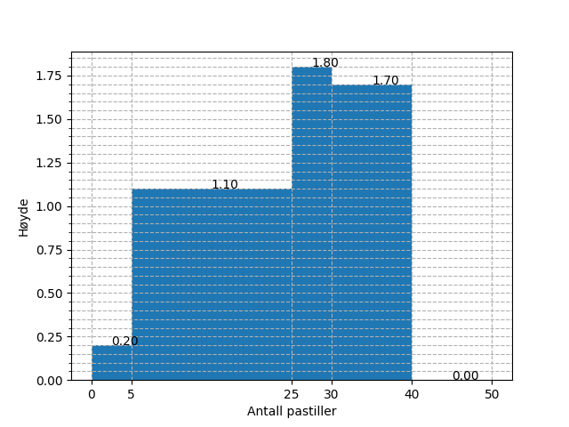

2P fagdag - Statistikkoppgaver
Du er elev 5 i klasse 2PC4.
Definisjon
Gjør rede for følgende begrep og gi et eksempel på hver:
median, typetall og kvartilbredde
Bruk av sentral- og spredningsmål
Finn median, gjennomsnitt, kvartilbredde og standardavvik for følgende verdier:
24.21 14.02 40.08 1.02 14.50 31.43 12.66 10.75 35.17 19.55 22.60 -0.86 22.83 10.32 25.60
Medianen er 19.55. Gjennomsnittet er 18.92. Kvartilbredden er 13.20. Standardavviket er 11.27.
Frekvenstabell
Velg en av alternativene under.
Alternativ 1 Finn median, typetall, gjennomsnitt og variasjonsbredde for dataene undder.
| Terningkast | Frekvens |
|---|---|
| 1 | 3 |
| 2 | 3 |
| 3 | 8 |
| 4 | 4 |
| 5 | 1 |
| 6 | 3 |
Gjennomsnittet er 3.27. Medianen er 3.0. Typetallet er 3. Variasjonsbredden er 5.
Alternativ 2 Finn median og gjennomsnitt for dataene under.
| Poeng | Frekvens |
|---|---|
| [0, 20> | 2 |
| [20, 40> | 1 |
| [40, 60> | 2 |
| [60, 80> | 2 |
| [80, 95> | 6 |
| [95, 100> | 6 |
Gjennomsnittet er 73.68. Medianen er 85.00.
Den nye læreren
På en skole jobbet det i utgangspunktet 17 realfagslærere, som da hadde en gjennomsnittsalder på 47.59 år. Det begynner så en ny lærer på skolen, og brått blir gjennomsnittsalderen 47.78 år.
Hva er aldereden til den nye læreren?
Fasiten er 51.
Diagramtolkning
Diagrammet under viser visualiseringen av to datasett. Hva kan du si om sentral- og spredningsmål for de to i forhold til hverandre?
Histogrammet
Histogrammet under viser fordelingen av svar på en "hvor mange pastiller er det i krukka"-oppgave, hvor mange deltok?

- Ut fra verdiene i histogrammet over, hva vil du tro mengden pastiller i krukka var?
Fasiten er 50.
Kumulativ match
Under vises et stolpediagram og fire foreslåtte kummulative grafer. Hvilken av de fire alternativene tilhører dataene fra stolpediagrammet?

Fasiten er d).
Foreslå visualisering
Velg to av pounktene under og illustrer dem i hvert sitt diagram. Begrunn valget av diagram.
- Karakterfordelingen i en klasse etter en prøve (rundt 30 elever)
- Karakterfordelingen for en skole etter en heldagsprøve i norsk (rundt 600 elever)
- Gjennomsnittskarakteren for årets FIFA-spill for årene 1996 til 2017.
- Aldersfordelingen for de som ser på Dagsrevyen mer enn to ganger hver uke.
Skisser
For to av punktene i forrige oppgave, skisser hvordan en slik fordeling kan se ut.
Statistisk analyse
Velg ett av de to alternativene under.
Alternativ 1 I en 2P-klasse ble det gjennomført en prøve, under vises poengene, som var fra 0 til 20.
1 16 20 15 15 8 3 20 16 15 14 13 3 19 15 16 14 3 16 17 2 6 4 3 19 6 7 20 10 6 2 5
- Regn ut gjennomsnitts- og medianpoengene til elevene.
- Tegn et diagram som illustrerer dataene
Medianpoengene er 13.50. Gjennomsnittspoengene er 10.91.
Alternativ 2 På en skole ble det gjennomført en 2P-prøve for et trinn. Poengene, som var fra 0 til 100, blei som vist under.
83 71 79 72 35 59 72 63 49 28 30 67 31 48 67 42 55 79 15 92 23 27 75 17 62 78 98 51 82 36 69 83 22 100 74 61 55 56 58 43 47 37 58 95 32 100 25 72 36 67
- Grupper dataene i en frekvenstabell hvor gruppene er [0, 20>, [20, 40>, [40, 60>, [60, 80>, [80, 95>, [95, 100].
- Finn gjennomsnittspoengene både via det grupperte materialet, og eksakt. Forklar eventuelle forskjeller på de to tallene.
- Vis dataene i et histogram.
Gruppene over viser til en typisk karakterinndeling. En av lærerne på skolen, ønsker å gjøre det litt vanskeligere å bestå,så alt under 25 poeng gir karakteren 1, men litt lettere å få karakteren 6, nå fra 90 poeng. Hvordan ville det påvirket karakterfordelingenpå trinnet?
| Poeng | Antall |
|---|---|
| [0, 20> | 2 |
| [20, 40> | 12 |
| [40, 60> | 12 |
| [60, 80> | 16 |
| [80, 95> | 4 |
| [95, 100> | 4 |
Eksakt gjennomsnitt er 57.52. Gruppert gjennomsnitt er 56.80.
Antall 1-ere etter endring er 4. Antall 6-ere etter endring er 5.